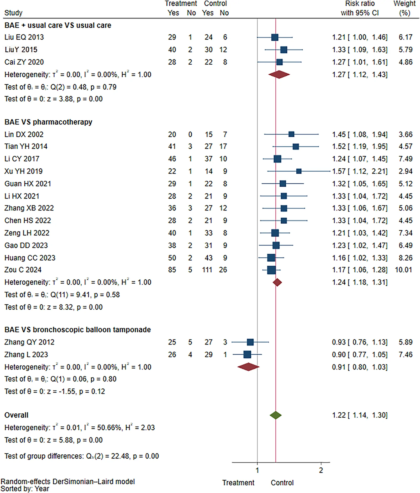
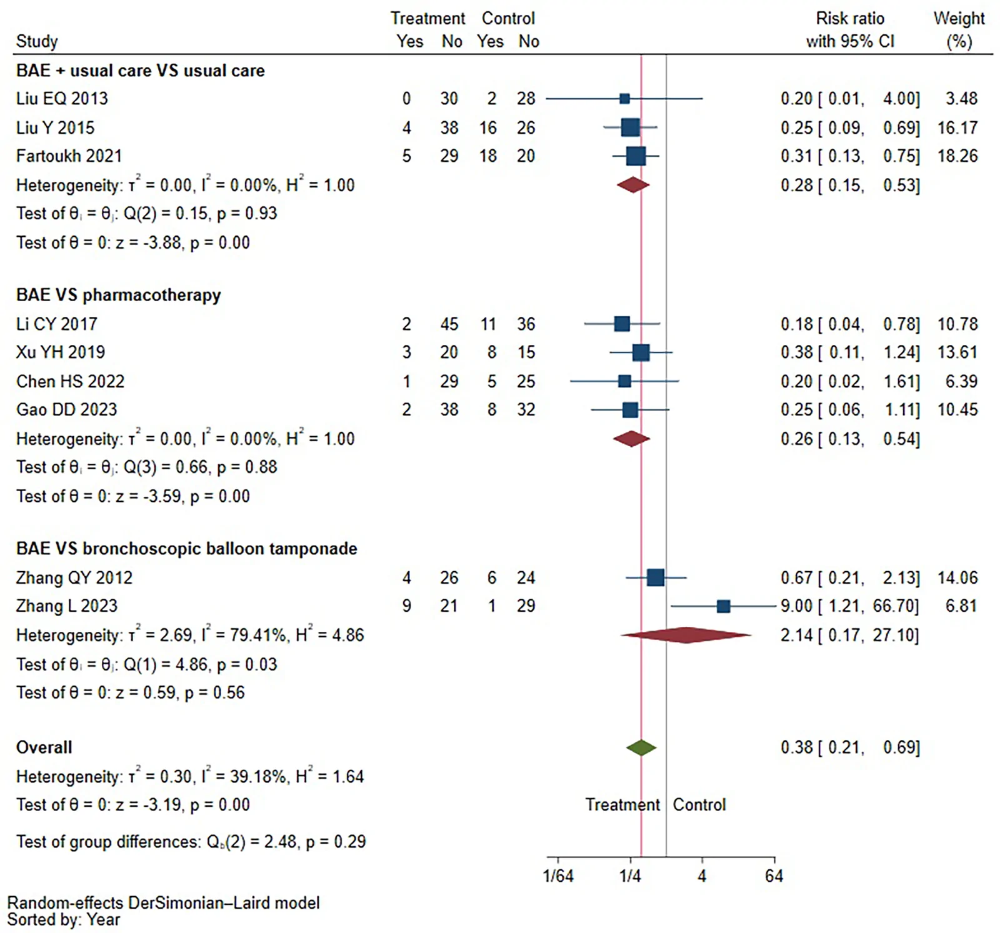
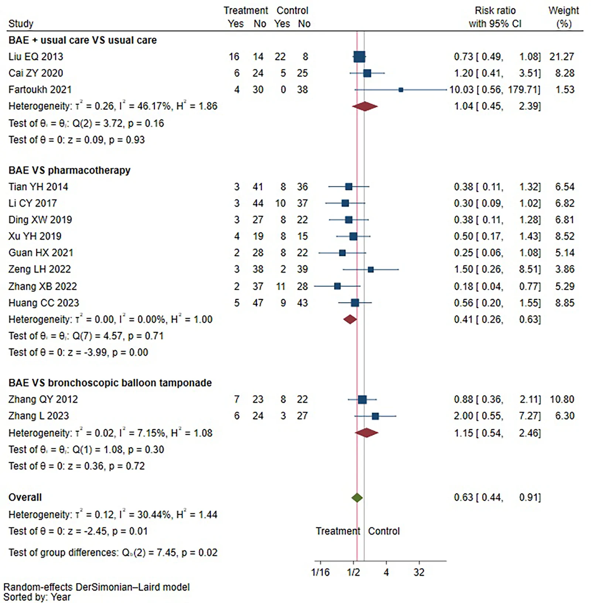

IR Weekly Literature Digest · Full-text analysis
Efficacy and safety of bronchial artery embolization in the treatment of hemoptysis:a systematic review and meta-analysis of RCTs.
Front Med (Lausanne). 2026 Oct 21;13:1959450. doi: 10.3389/fmed.2026.1959450
Read the original articlePubMedOverview
This PROSPERO-registered systematic review and meta-analysis pooled 20 RCTs (1,594 patients) comparing bronchial artery embolization (BAE) with pharmacotherapy, bronchoscopic balloon tamponade, surgery, or BAE plus usual care versus usual care alone. Comparator-specific analyses were the primary analyses. Against pharmacotherapy, BAE had higher clinical efficacy (RR 1.24, 95% CI 1.18-1.31), lower recurrence (RR 0.26, 0.13-0.54), lower mortality (RR 0.20, 0.05-0.90) and fewer complications (RR 0.41, 0.26-0.63). Evidence for the other comparators was sparse and low or very-low certainty. Nearly all trials were small Chinese-language studies with poor reporting of randomization and allocation concealment, so the apparent benefit should be read cautiously.
Study design
Systematic review and meta-analysis of RCTs, PRISMA-reported, PROSPERO CRD420250643812. PubMed, Embase, Cochrane and four Chinese databases (CNKI, Wanfang, CQVIP, SinoMed) were searched to 29 Dec 2024, with an update reported for June 2026. Two reviewers screened and extracted data independently. The search retrieved 8,000 citations, 4,099 after de-duplication, 90 full texts and 20 included RCTs (1 English, 19 Chinese). Risk of bias used RoB 2. Pooling used DerSimonian-Laird random effects (RR for binary outcomes, WMD for continuous), with Hartung-Knapp-Sidik-Jonkman sensitivity analysis, prediction intervals, Harbord test when 10 or more studies were available, and GRADE per outcome-contrast. Follow-up subgroups were 1, 3, 6 and 12 months. The comparator mix was 13 trials versus pharmacotherapy, 2 versus bronchoscopic balloon tamponade, 1 versus surgery and 4 BAE plus usual care versus usual care.
Patients
Patients with hemoptysis of any cause. Etiologies were tuberculosis (5 studies), bronchiectasis (3), lung cancer (1), and cystic fibrosis, pneumonia or mixed causes (10 studies). Severity was massive in 16 trials, mild in 1 and mixed in 3. Most trials were from China. Table 1 shows arms of about 20-90 patients, often with mean ages around 40-65 years. Embolic agents were mostly PVA, gelatin sponge and/or coils, and not reported in several trials. Follow-up ranged from 1 day to 365 days. Ongoing trials and studies without full text were excluded.
Intervention and comparator
BAE (embolic agents including PVA particles, gelatin sponge and spring coils; technique details were not systematically reported) versus pharmacotherapy, bronchoscopic balloon tamponade, or surgery. Add-on designs compared BAE plus usual care with usual care. The comparator-specific analyses were: BAE vs pharmacotherapy, BAE vs balloon tamponade, BAE vs surgery (a single trial, not separately pooled), and BAE plus usual care vs usual care. Pooled "overall" estimates across all comparators were labelled exploratory.
Results
| Clinical efficacy (17 RCTs, 1,345 pts; study-specific definitions) | BAE vs pharmacotherapy RR 1.24 (95% CI 1.18-1.31), moderate certainty. BAE plus usual care vs usual care RR 1.27 (1.12-1.43), very low certainty. BAE vs balloon tamponade RR 0.91 (0.80-1.03), low certainty. Between-comparator P <0.001. Exploratory overall RR 1.22 (1.14-1.30). |
|---|---|
| Hemoptysis recurrence (9 RCTs, 616 pts) | BAE vs pharmacotherapy RR 0.26 (0.13-0.54), moderate certainty (4 trials). BAE plus usual care vs usual care RR 0.28 (0.15-0.53), moderate certainty (3 trials). BAE vs balloon tamponade RR 2.14 (0.17-27.10), very low certainty, I2 79.41%. Between-group P=0.29. Exploratory overall RR 0.38 (0.21-0.69). |
| Mortality (5 RCTs, 356 pts) | BAE vs pharmacotherapy RR 0.20 (0.05-0.90), moderate certainty (2 trials). BAE plus usual care vs usual care RR 0.36 (0.05-2.43), low certainty. Between-group P=0.64. Exploratory overall RR 0.25 (0.08-0.81). |
| Overall complications (13 RCTs, 924 pts) | BAE vs pharmacotherapy RR 0.41 (0.26-0.63), moderate certainty (8 trials). BAE plus usual care vs usual care RR 1.04 (0.45-2.39), low certainty. BAE vs balloon tamponade RR 1.15 (0.54-2.46), low certainty. Between-group P=0.02. Exploratory overall RR 0.63 (0.44-0.91), which lost significance under HKSJ. |
| Time to hemostasis (5 RCTs, 362 pts) | WMD -0.54 (95% CI -1.84 to 0.76), very low certainty, no significant difference. |
| Specific adverse events | Nausea/vomiting RR 0.11 (0.03-0.40; 5 RCTs, 348 pts). Abdominal pain RR 0.28 (0.05-1.67). Chest pain RR 0.54 (0.23-1.23). Palpitations RR 0.62 (0.18-2.15). Cough RR 0.90 (0.05-15.51). Fever RR 1.28 (0.48-3.40; 7 RCTs). Chest distress RR 1.23 (0.34-4.48). Only nausea/vomiting reached significance. |
| Pulmonary function and blood gases (low certainty) | FEV1/FVC WMD 7.62 (4.80-10.45; 5 RCTs, 415 pts). PaO2 WMD 1.38 (0.48-2.28). PaCO2 WMD -1.00 (-1.68 to -0.32). pH WMD 0.11 (-0.06 to 0.29). PaO2 and PaCO2 CIs crossed the null under HKSJ. |
| Risk of bias and sensitivity | 12/20 trials (60%) reported sequence generation, 1/20 (5%) reported allocation concealment, and all 20 were described as blinding outcome assessors. HKSJ gave similar direction and magnitude with wider CIs. Excluding high-risk trials left estimates similar in some contrasts, changed them materially in others, or left only one lower-risk trial. |
Key figures

| Outcome (No. of trials/ patients) | Treatment contrast | No. of trials | Risk of bias | Inconsistency | Indirectness | Imprecision | Publication bias | Treatment association (95% CI) | Overall certainty of evidence |
|---|---|---|---|---|---|---|---|---|---|
| Clinical efficacy 17 (1,345) | Pharmacotherapy usual care balloon tamponade | 12 | No*(55.22%) | I2=0% | Yes↓ | No | No(p=0.20) | RR 1.24 (1.18 to 1.31) | Moderate |
| 3 | Yes(74.25%)↓ | I2=0% | Yes↓ | Yes↓ | NA | RR 1.27 (1.12 to 1.43) | Very Low | ||
| 2 | No*(37.71%) | I2=0% | Yes↓ | Yes↓ | NA | RR 0.91 (0.80 to 1.03) | Low | ||
| Recurrence 9 (616) | Pharmacotherapy usual care balloon tamponade | 4 | No*(0%) | I2=0% | No | Yes↓ | NA | RR 0.26 (0.13 to 0.54) | Moderate |
| 3 | No*(45.65%) | I2=0% | No | Yes↓ | NA | RR 0.28 (0.15 to 0.53) | Moderate | ||
| 2 | Yes(55.13%)↓ | I2=79.41%↓ | No | Yes↓ | NA | RR 2.14 (0.17 to 27.10) | Very Low | ||
| Mortality 5 (356) | Pharmacotherapy usual care | 2 | No*(0%) | I2=0% | No | Yes↓ | NA | RR 0.20 (0.05 to 0.90) | Moderate |
| Yes(76.15%)↓ | I2=0% | No | Yes↓ | NA | RR 0.36 (0.05 to 2.43) | Low | |||
| Overall complications 13 (924) | Pharmacotherapy usual care balloon tamponade | 8 | No*(40.54%) | I2=0% | No | Yes↓ | NA | RR 0.41 (0.26 to 0.63) | Moderate |
| 3 | Yes(60.29%)↓ | I2=46.17% | No | Yes↓ | NA | RR 1.04 (0.45 to 2.39) | Low | ||
| 2 | Yes(66.98%)↓ | I2=7.15% | No | Yes↓ | NA | RR 1.15 (0.54 to 2.46) | Low |


Safety
Overall complications were not graded with a uniform system. Event definitions were study-specific and no standard scale such as CIRSE or SIR was used. Against pharmacotherapy, BAE had fewer overall complications (RR 0.41, 0.26-0.63), mainly driven by less nausea and vomiting (RR 0.11, 0.03-0.40), which is probably a drug side effect in the comparator arm. Fever and chest distress numerically favored the control arm, but neither was significant. For add-on and tamponade comparisons there was no difference. The paper does not report major BAE-specific complications such as spinal cord ischemia, bronchial or esophageal necrosis, or stroke. The cited background rate is 0-4.6%. Post-embolization syndrome was only partly captured.
Strengths
- First meta-analysis restricted to RCTs, with extensive Chinese-database searching that found 19 RCTs not in prior reviews
- Prospective registration, dual independent screening and extraction, and RoB 2 assessment
- Comparator-specific primary analyses with tests for between-comparator differences, rather than relying on one pooled estimate
- GRADE applied per outcome-contrast, with prediction intervals, OIS, HKSJ and high-risk-of-bias exclusion sensitivity analyses
- Honest labelling of the pooled overall estimates as exploratory
Limitations
- Evidence base is dominated by small, single-center Chinese trials. Randomization method was reported in only 60% and allocation concealment in 5%. Blinding of all outcome assessors in 100% of trials is implausible given the open interventions, and the paper offers no explanation. High risk of bias contributed more than half the weight in several contrasts.
- Peer review could not be verified for half of the included trials, and funding was reported in only 5. This raises the possibility of low-quality or unreliable trial reports. Publication bias could be tested only for clinical efficacy (p=0.20).
- Clinical efficacy was defined differently in each trial, so the pooled RR is indirect. Efficacy is often a composite or a subjective measure. Time to hemostasis and recurrence were inconsistently defined, with follow-up from 1 day to 365 days, so many 'recurrence' and 'complication' estimates reflect very short follow-up.
- Sparse data for several contrasts. Balloon tamponade has 2 trials, surgery has 1 trial and was not analysed, and the mortality contrasts have 2 trials or fewer. The recurrence estimate for tamponade (RR 2.14, 0.17-27.10) is uninformative. Mortality and recurrence were downgraded for imprecision, and the pharmacotherapy mortality CI (0.05-0.90) is wide and fragile.
- The comparator, mostly pharmacotherapy (often hemostatic drugs such as pituitrin), is a weak control. It is not the real-world alternative for massive hemoptysis, so the large benefit probably overstates the relevance to contemporary practice. Reduced complications with BAE largely reflect drug adverse effects (nausea and vomiting), not procedural safety.
- No subgroup analysis by etiology, embolic agent or technique. No procedural data such as non-bronchial collateral embolization, CTA use or microcatheter use, which matter to IRs. The discussion's claim that recurrence has declined over time is speculative and not tested.
- Moderate-certainty grading rests on judgments (for example, risk-of-bias thresholds of 55% and 65% weight) that are somewhat arbitrary. HKSJ widened CIs and removed significance for some outcomes. The search update date of 'June 24, 2026' is inconsistent with a December 2024 search cutoff, which is a reporting error. Generalizability outside China, and to malignancy-related hemoptysis, is uncertain.
In context
Previous reviews were observational, with one including 3 RCTs among nine cohort studies (2024). Those reviews quoted BAE control rates of 80-90%, recurrence of 10-57% and major complications of 0-4.6%. This review adds 19 more RCTs and reports results consistent with the benefit seen in observational data, while its own limitations are acknowledged. The authors argue that recurrence has fallen with CT angiography, superselective microcatheterization, collateral embolization and permanent embolics, but the paper did not test this. They support guideline positioning of BAE as an early option for moderate-to-massive hemoptysis, with surgery and bronchoscopy as complementary options.
Implications for practice
The review supports what IRs already do. BAE is effective for hemoptysis, with clearly better control, recurrence and survival than medical therapy alone in the trials pooled, and the add-on design (BAE plus usual care) shows lower recurrence (RR 0.28, 0.15-0.53). However, the evidence comes mainly from small, poorly reported Chinese trials with weak comparators, so confidence should be moderate at best. It should not be used to argue superiority over bronchoscopic tamponade or surgery, where data are too sparse. The safety data are too coarse to inform counseling on serious BAE-specific complications such as spinal cord ischemia. The results do not guide embolic choice or technique. The pooled all-comparator numbers should be ignored. Better multicenter RCTs with standardized efficacy definitions, longer follow-up and etiology stratification are needed.